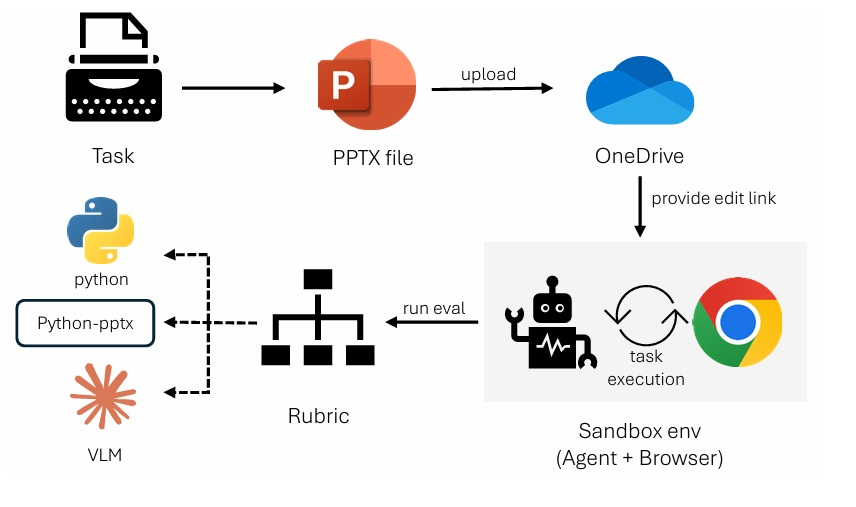

PPTArena runs tasks inside a sandboxed PowerPoint Online session. Agents issue GUI-level actions (selection, typing, dragging, focus changes) mirroring human interaction and revealing realistic failure modes like mis-clicks or unintended global style changes.
Execution Loop. Each task specifies a natural language goal; the agent iteratively observes updated state (DOM/screenshot/metadata) and selects the next action until completion or step budget exhaustion.
Rubric Scoring. A task-specific rubric tree comprises critical checkpoints (essential edits) and non-critical quality checks (e.g. precise positioning, avoiding extra animations). Leaves may invoke deterministic comparisons plus LLM/VLM judgments for semantic or visual criteria.
Aggregation Strategy. Modified scoring combines average critical progress with penalties from non-critical shortcomings, avoiding collapse of near-complete attempts to zero while preserving importance of essential changes.
Human & Model Collaboration. Draft rubrics sourced from large language models are refined via multi-stage expert review to ensure consistency and robustness against reward hacking or ambiguous instructions.